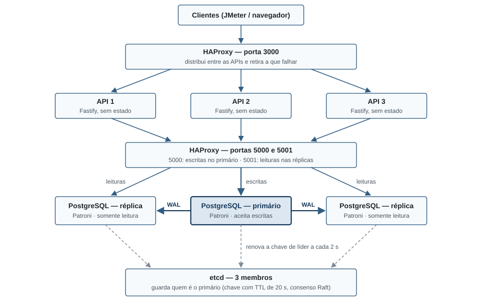
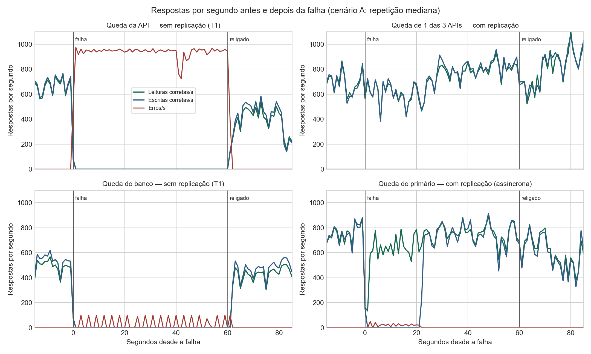
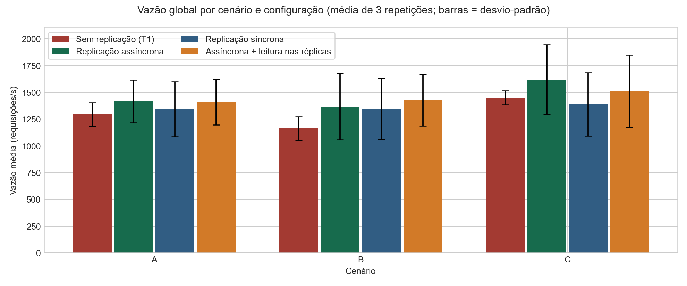

A aplicação é a mesma do T1: medições de qualidade do ar, as mesmas rotas CRUD, o mesmo dataset de 50 mil registros e o índice composto escolhido no T1. No T1, a API e o banco eram processos únicos, e a queda de qualquer um deles interrompia o serviço inteiro. No T2, cada camada passou a ter réplicas:
| Componente | Réplicas | Tecnologia | Papel |
|---|---|---|---|
| Balanceador | 1 | HAProxy 3.2 | Distribui as requisições entre as APIs e leva as conexões SQL ao primário ou às réplicas, verificando a saúde de cada servidor |
| Servidor web | 3 | Node.js 22, Fastify 5, TypeScript | A mesma API do T1, sem estado |
| Banco de dados | 3 | PostgreSQL 16 + Patroni 4.1 | Um primário e duas réplicas; o Patroni promove uma réplica quando o primário cai |
| Coordenação | 3 | etcd 3.5 | Guarda qual nó é o primário; as decisões são tomadas por consenso (Raft) |
| Clientes simulados | — | Apache JMeter 5.6.3 | O mesmo plano de carga do T1 |
A API também foi alterada para atravessar uma troca de primário:
503.POST envia o cabeçalho Idempotency-Key; se for repetido após uma falha, a API devolve o registro já criado em vez de duplicá-lo.Os clientes acessam somente o HAProxy. Ele verifica cada API a cada segundo e observa o tráfego: uma API que deixa de aceitar conexões sai do balanceamento, e as requisições que estavam com ela são reenviadas a outra réplica. No banco, o HAProxy consulta o Patroni de cada nó a cada 0,5 s, e a porta 5000 sempre leva ao primário atual. O primário renova a cada 2 s uma chave de líder no etcd, válida por 20 s; se ele morre, a chave expira, a réplica mais atualizada é promovida e a outra passa a segui-la. Quando o nó antigo volta, é reintegrado como réplica.

| Configuração | Topologia | Replicação do banco | Leituras |
|---|---|---|---|
| Sem replicação (T1) | 1 API + 1 PostgreSQL | — | No único banco |
| Replicação assíncrona | 3 APIs + 3 PostgreSQL | O primário confirma o commit sem esperar as réplicas | No primário |
| Replicação síncrona | 3 APIs + 3 PostgreSQL | O primário espera uma réplica gravar o log antes de confirmar | No primário |
| Assíncrona + leitura nas réplicas | 3 APIs + 3 PostgreSQL | Assíncrona | Nas réplicas |
O total de conexões com o primário foi o mesmo nas duas topologias: 15 (uma API com pool de 15 no T1; três APIs com pool de 5 no T2). Antes de cada rodada, a tabela era recriada com os 50.000 registros e o índice composto do T1.
Durante a carga do cenário A (50 leitores e 50 escritores), um servidor foi derrubado com docker kill aos 50 s — queda abrupta, sem desligamento ordenado — e religado 60 s depois, em rodadas de 150 s.
| Falha | O que foi feito | Configurações |
|---|---|---|
| Queda do servidor web | Derrubar uma das três APIs (no T1, a única) | Sem replicação, assíncrona |
| Queda do primário do banco | Derrubar o primário atual (no T1, o único banco) | Sem replicação, assíncrona, síncrona |
| Queda de uma réplica do banco | Derrubar uma réplica (no modo síncrono, a réplica síncrona) | Assíncrona, síncrona, assíncrona + leitura nas réplicas |
| Troca planejada do primário | Pedir ao Patroni que passe a liderança a uma réplica, sem derrubar nada | Assíncrona, síncrona |
Foram realizadas 36 rodadas sem falha (4 configurações × 3 cenários × 3 repetições, 60 s cada, descartando os 10 s de ramp-up) e 30 rodadas com falha (10 combinações × 3 repetições). As repetições foram intercaladas entre as configurações. No total, o JMeter registrou 8.993.625 requisições.
| Item | Configuração observada |
|---|---|
| Máquina | Windows 11 Home; Intel Core i7-11800H; 8 núcleos e 16 processadores lógicos; aproximadamente 15,8 GiB de RAM |
| Docker Desktop | 16 CPUs lógicas e aproximadamente 7,6 GiB disponíveis |
| Banco | PostgreSQL 16.14, Patroni 4.1.5 e etcd 3.5.34 |
| Balanceador | HAProxy 3.2.22 |
| Ferramenta de carga | Apache JMeter 5.6.3 sobre Java 24 |
| Métricas | Vazão, percentil 95, erros e maior intervalo sem nenhuma resposta correta após a falha |
A tabela reúne as médias das três repetições de cada falha. O intervalo sem leitura (ou sem escrita) é o maior tempo, depois da queda, em que nenhum cliente conseguiu uma leitura (ou escrita) bem-sucedida.
| Falha | Configuração | Erros de leitura | Erros de escrita | Sem leitura (s) | Sem escrita (s) |
|---|---|---|---|---|---|
| Queda do servidor web | Sem replicação (T1) | 28.225 | 28.205 | 61,2 | 61,2 |
| Queda do servidor web | Assíncrona | 0 | 0 | 0,1 | 0,1 |
| Queda do primário do banco | Sem replicação (T1) | 983 | 983 | 61,6 | 61,6 |
| Queda do primário do banco | Assíncrona | 0 | 445 | 0,9 | 21,5 |
| Queda do primário do banco | Síncrona | 0 | 465 | 0,8 | 22,2 |
| Queda de uma réplica do banco | Assíncrona | 0 | 0 | 0,1 | 0,2 |
| Queda de uma réplica do banco | Síncrona | 0 | 0 | 1,6 | 1,7 |
| Queda de uma réplica do banco | Assíncrona + leitura nas réplicas | 0 | 0 | 0,2 | 0,3 |
| Troca planejada do primário | Assíncrona | 0 | 10 | 0,5 | 1,9 |
| Troca planejada do primário | Síncrona | 0 | 6 | 0,5 | 1,9 |
No T1, o número de erros depende da espera de 100 ms após cada erro; na queda do banco ele é menor porque cada requisição aguarda os 2,5 s de novas tentativas da API antes de receber 503.
503 a todas as requisições até o PostgreSQL ser religado.503 por cerca de 22 s, até a chave de líder expirar e uma réplica ser promovida, e depois voltaram sozinhas. O nó derrubado, ao ser religado, voltou como réplica cerca de 30 s depois. Os modos assíncrono e síncrono se comportaram igual, porque a detecção é a mesma.
| Componente | Réplicas | Justificativa |
|---|---|---|
| API | 3 | Tolera a queda de uma e mantém duas, que sustentaram a carga inteira (Seção 4). Com duas, uma queda deixaria o sistema sem redundância até a réplica voltar. |
| PostgreSQL | 3 (1 + 2) | Com uma réplica só, a queda dela no modo síncrono obrigaria a escolher entre bloquear as escritas e abrir mão de não perder dados. Com duas, o papel de síncrona passa para a outra, e após um failover ainda resta uma réplica. |
| etcd | 3 | O consenso exige maioria: com 3 membros, 2 decidem e 1 pode falhar. Para tolerar f falhas são necessários 2f + 1 membros; 4 membros também tolerariam só 1. |
O banco usa replicação primário-backup (passiva) com envio de log: só o primário executa escritas; cada alteração é gravada no WAL (write-ahead log), que é transmitido continuamente às réplicas e reaplicado por elas na mesma ordem. As réplicas são cópias exatas do primário, inclusive do índice, e não aceitam escritas. O que muda entre os modos é quando o cliente recebe a confirmação:
| Modo | O commit é confirmado depois de | Perda possível quando o primário cai |
|---|---|---|
| Assíncrono | Gravar o WAL no disco do primário | Escritas já confirmadas que ainda não tinham chegado às réplicas |
| Síncrono | Gravar o WAL também no disco de uma réplica | Nenhuma escrita confirmada |
Cada escrita do JMeter foi conferida pela sua chave de idempotência: nas 6 quedas de primário medidas, nenhuma escrita confirmada se perdeu. No modo assíncrono, a perda exige que a queda caia nos poucos milissegundos entre a confirmação e o envio do WAL; isso aconteceu num ensaio preliminar, em que uma exclusão confirmada reapareceu no novo primário. No modo síncrono essa perda não é possível.
# Trecho de infra/patroni/patroni.yml ttl: 20 # validade da chave de líder no etcd (s) loop_wait: 2 # o primário renova a chave a cada 2 s synchronous_mode: false # true = commit síncrono com uma réplica maximum_lag_on_failover: 1048576 # réplica atrasada mais de 1 MiB não é promovida
A troca de dono da chave de líder é uma operação atômica decidida por consenso no etcd, então dois nós nunca se consideram primários ao mesmo tempo. Um nó que volta é reintegrado como réplica; se tinha gravado algo que o novo primário não recebeu, o pg_rewind descarta essa diferença. As APIs não têm dados para sincronizar: uma nova versão é implantada trocando uma réplica de cada vez.
A tabela reúne as médias das três repetições, sem os 10 s de ramp-up. A coluna DP mostra o desvio-padrão da vazão global entre as repetições. Não houve erros nas 36 rodadas.
| Configuração | Cen. | Vazão (req/s) | DP | P95 leitura (ms) | P95 escrita (ms) |
|---|---|---|---|---|---|
| Sem replicação (T1) | A | 1.292,5 | 109,0 | 112,7 | 104,3 |
| Sem replicação (T1) | B | 1.162,2 | 111,1 | 119,3 | 112,0 |
| Sem replicação (T1) | C | 1.449,0 | 66,9 | 100,0 | 94,7 |
| Replicação assíncrona | A | 1.415,2 | 200,3 | 159,7 | 162,2 |
| Replicação assíncrona | B | 1.367,5 | 311,1 | 156,3 | 161,0 |
| Replicação assíncrona | C | 1.618,1 | 326,7 | 146,7 | 146,7 |
| Replicação síncrona | A | 1.342,9 | 255,6 | 163,0 | 169,3 |
| Replicação síncrona | B | 1.345,1 | 286,1 | 164,3 | 173,3 |
| Replicação síncrona | C | 1.388,2 | 296,0 | 163,7 | 168,3 |
| Assíncrona + leitura nas réplicas | A | 1.410,0 | 212,9 | 140,0 | 166,7 |
| Assíncrona + leitura nas réplicas | B | 1.426,3 | 240,1 | 196,7 | 93,7 |
| Assíncrona + leitura nas réplicas | C | 1.510,7 | 338,5 | 74,7 | 209,3 |

| Componente | Tipo | O que guarda | Consequência observada |
|---|---|---|---|
| API | Stateless | Nada entre requisições | Recuperação apenas por roteamento: fora do balanceamento em 0,5 s, sem nenhum erro |
| HAProxy | Stateless | Só a configuração e as conexões abertas | Fácil de duplicar, mas foi mantido único neste trabalho |
| PostgreSQL | Stateful | Os dados | Exige replicação, eleição e reintegração: cerca de 22 s sem escritas na queda do primário |
| etcd | Stateful | Qual nó é o primário | Exige consenso entre 3 membros |
Como as APIs não guardam estado, qualquer réplica pode atender qualquer requisição, inclusive a repetição de uma requisição que outra réplica começou; por isso a chave de idempotência fica no banco, e não na memória da API. Tolerar a queda de uma API exigiu apenas detectar a falha e redirecionar o tráfego. Já o banco concentrou toda a complexidade: manter as cópias atualizadas, decidir com segurança quem é o primário, reintegrar o nó que volta e escolher entre confirmar rápido (assíncrono) ou não perder dados (síncrono). É também onde ficou a única indisponibilidade relevante. Manter a aplicação sem estado e concentrar o estado num banco replicado foi o que tornou a solução viável.
| Critério | SQL — PostgreSQL (usado) | NoSQL — exemplos: MongoDB e Cassandra |
|---|---|---|
| Quem aceita escritas | Somente o primário | MongoDB: somente o primário; Cassandra: qualquer réplica |
| Troca de primário | Não é embutida: exigiu Patroni, etcd e HAProxy; 22 s sem escrita | MongoDB: eleição embutida, em geral concluída em até 12 s; Cassandra: não há primário a trocar |
| Atualização das réplicas | Log físico (WAL), assíncrono ou síncrono | MongoDB: log de operações, com confirmação pela maioria (w: majority); Cassandra: escrita em várias réplicas com quórum configurável |
| Repetição de escritas | Implementada na API (chave de idempotência) | MongoDB: os drivers repetem as escritas automaticamente |
| Consistência | Forte no primário; réplicas podem estar atrasadas | MongoDB: semelhante; Cassandra: eventual, ou forte com quóruns de leitura e escrita |
| Integridade | Chaves, CHECK, UNIQUE e transações ACID em qualquer nó que vire primário | Mais responsabilidade da aplicação; transações mais limitadas |
Com o PostgreSQL, a alta disponibilidade teve de ser montada por fora, com três componentes adicionais e mudanças na API. Em troca, há consistência forte, integridade declarada no banco — a idempotência do POST usa uma restrição UNIQUE — e nenhuma perda de dados no modo síncrono, ao custo de cerca de 22 s sem escritas a cada queda não planejada do primário. O MongoDB traria a eleição e a repetição de escritas prontas, com indisponibilidade parecida. O Cassandra continuaria aceitando escritas durante a queda de um nó, em troca de consistência eventual e menos garantias de integridade. Para o esquema estável e o volume deste sistema, o PostgreSQL continua adequado; um banco sem primário só se justificaria se as escritas não pudessem parar nem por alguns segundos.
docker kill. Falhas de rede, de disco ou de máquina inteira e falhas simultâneas de dois servidores não foram ensaiadas.A replicação eliminou os pontos únicos de falha do servidor web e do banco de dados. Sem replicação, a queda de qualquer um dos dois servidores deixou a aplicação cerca de 61 s fora do ar, até o processo ser religado. Com três APIs atrás do HAProxy, a queda de uma delas não gerou nenhum erro para os clientes. Com o PostgreSQL replicado, as leituras continuaram durante a queda do primário e as escritas voltaram sozinhas depois de cerca de 22 s, sem perda de escritas confirmadas nas rodadas medidas.
Foram usadas três réplicas da API, três nós do PostgreSQL (um primário e duas réplicas) e três membros do etcd. As réplicas do banco são atualizadas pelo envio contínuo do log (WAL) do primário. O modo síncrono garante que nenhuma escrita confirmada se perca, a um custo que cresce com a proporção de escritas (P95 de escrita até 14,8% maior no cenário C). A topologia replicada aumentou a latência em relação ao T1 (P95 de 31% a 55% maior), sem reduzir a vazão.
A diferença entre servidores sem estado e com estado apareceu nos resultados: a camada web se recuperou em menos de 1 s apenas redirecionando o tráfego, enquanto o banco precisou de eleição e de um prazo de segurança de 20 s. Com o PostgreSQL, a alta disponibilidade exigiu componentes externos e mudanças na API, em troca de consistência forte e integridade declarada no banco. Para o esquema e o volume deste sistema, essa troca é adequada.